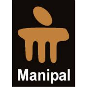
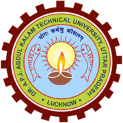
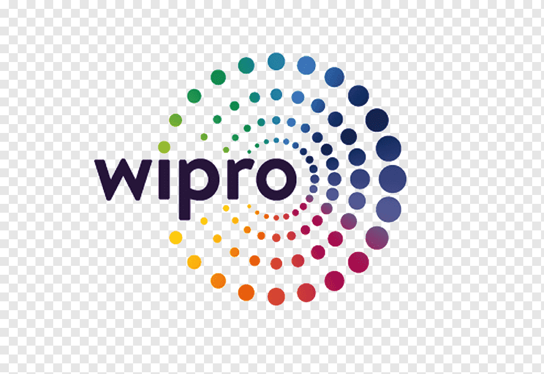

Virat Gupta
Hi, My name is Virat Gupta and I'm a Techno Manager. Welcome to my personal website!
- Delhi
- virathcst077@gmail.com
Hey there! My name is Virat Gupta.
Strategic Learning & Development Manager with 17+ years of experience leading enterprise learning programs, assessment operations, talent development initiatives, and process improvement efforts. Proven track record of driving operational excellence through data analytics, automation, and business intelligence solutions. Skilled in developing Python-based automation frameworks, Power BI dashboards, and data-driven reporting tools that enhance efficiency, streamline workflows, and support strategic decision-making. Recognized for delivering scalable solutions, leading cross-functional teams, and consistently achieving business objectives within demanding timelines. A continuous learner with a passion for leveraging emerging technologies to drive innovation and measurable organizational impact.
Education

MBA
Sikkim Manipal University
Sikkim. 2011 → 2013
MBA in Project Management.
This is a Masters Degree that prepares professionals to meet the complex demands of any industry. It emphasizes on planning, leading projects and derive business outcomes.

Bachelor of Technology
Uttar Pradesh Technical University
Lucknow. 2004 → 2008
Engineering in Electronics & instrumetation.
B.Tech is a Technical course that prepares professionals to meet the complex demands of the industry. It emphasizes on Technological knowledge of domain.
Experience
Manager
Capgemini Technologies India Pvt. Ltd.
Gurugram. Feb 2018 → Present
• Led Freshers and Lateral Assessment Programs (Exceller Academia & OCEAN).
• Owned end-to-end assessment delivery, reporting, and certification.
• Managed assessment platforms (DoSelect, iMocha, iCompass) and analytics.
• Built Power BI dashboards for strategic learning initiatives.
• Facilitated fresher onboarding and assessment readiness programs.
• Provided end-user support for assessment platforms, troubleshooting issues and ensuring smooth assessment operations.
• Automated assessment workflows, reporting, certification processes and stakeholder communications, reducing manual effort and improving efficiency.
Experience

L&D Consultant
IKYA Human Capital Solutions
Gurugram.
Oct 2017 → Feb 2018
• Partnered with business leaders to identify capability gaps and drive learning strategy.
• Managed trainer and vendor relationships to deliver high-quality learning programs.
• Evaluated and onboarded technical SMEs and trainers based on business requirements.
• Developed structured learning roadmaps and managed monthly training calendars.
• Led feedback analysis, skill validation, and certification initiatives to enhance workforce capability.

Operation Manager
Wipro Limited
Gurugram.
October 2011 → October 2017
• Collaborated with senior stakeholders to drive service improvements and operational excellence.
• Led team enablement on new technologies, ITIL practices and infrastructure processes.
• Managed incident, change, problem, and asset management processes while ensuring SLA compliance.
• Oversaw team operations, performance management, budgeting and service delivery metrics.
• Delivered management reporting and ensured compliance across IT infrastructure and governance standards.
Team Lead (Helpdesk in IT Infrastructure Group)
3i Infotech Pvt. Ltd.
Delhi.
June 2010 → Aug 2011
• Managed shift operations, resource planning, and team performance against KRAs and goals.
• Developed MIS reports and analyzed service metrics to drive operational improvements.
• Engaged with key stakeholders and VIP users to enhance service quality and user satisfaction.
• Implemented process improvement initiatives to reduce ticket volumes and improve efficiency.
• Provided technical leadership, conducted team trainings and developed SOPs to strengthen service delivery.
Engineer L1
inTarvo Technologies Ltd. (Formaly RT Outsourcing Ltd.)
Delhi.
October 2008 → May 2010
• Leading various activities of Client site and making the closure with 100% accuracy with in time line.
• Extending technical support to End User and Helpdesk as well as Desk side engineers.
• Knowledge base documents preparation.
• Maintaining FCRs and motivating engineers for 100% effective support.
Achievements
- 2026: GEM Award, From India Learning HEAD for automation of certificate generation across both internal initiatives and business-driven requests.
- 2026: Prof. Communities; Top Contributor Award, From India Capabalilities Head for contribution to Capgemini India Creative Community.
- 2025: ICT Champion Award, From India Capabalilities Head for contribution to Capgemini India Professional Communities.
- 2025: WOW Award 2025 From India Learning HEAD for excellence in Assessment support & Automation.
- 2023: Extra Miler 2023 Capgemini Group HR Award.
- 2022: ACE Innovator of the year Award.
- 2022: LX Star Award in Q3.
- 2022: Pat on Batch Award in Q1.
- 2021: Individual Excellence award for Passion for Excellence.
- 2020: Individual Excellence award for Passion for Excellence.
- 2017: Best Team award. (Project – Aricent, Team size: 52 across 4 major centers of India)
- 2013: Best Team leader award from Wipro InfoTech.
Projects
- AI Learning Hub | Mail me to know more about this Project
- Bulk Certificate (PDF) Generate and release via Microsoft Outlook | Mail me to know more about this Project
- Bulk Email Sender via Python | Mail me to know more about this Project
- Bulk Email Sender via Excel Macro | Mail me to know more about this Project
- Convert multi page excel to PDF report via Python | Mail me to know more about this Project
- Reply to all with attachment in Microsoft Outlook | Mail me to know more about this Project